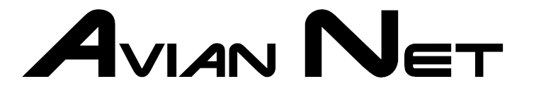

AvianNet Home

Photo tagging for aerial wildlife surveys: a 2018 National Day of Civic Hacking project
When: Sat. 11 Aug 2018
From: 9:30 am - 4:00 pm
Where: National Wildlife Visitors’ Center
10901 Scarlet Tangier Loop, Laurel, MD 20708 (map)
Register Today: Google Form
We are hosting a civic hacking project to develop a photo tagging platform to support the development of an Artificial Intelligence/Machine Learning (AI/ML) workflow suitable for aerial survey photos of waterfowl and marine birds.
More location information will be availble here.
(read time < 10 mins)
Introduction
Remote sensing technololgy has become increasingly cost-effective and accessible for wildlife data collection, but there remains a critical roadblock: the need to be able to use artificial intelligence (AI) and machine learning (ML) techniques to processing and analysis the large number of images that digital surveys would generate. Cameras deployed with aerial bird surveys produce terabytes of images. A first step in processing this data is the time consuming and tedious effort of sorting out pictures of empty terrain from those containing birds.
Development Need #1: a workflow for photo sorting and tagging to support aerial digital survey efforts and AI/ML research efforts. To begin the work on this process members of the Patuxent US FWS and USGS Community will host a National Day of Civic Hacking event on Saturday 11 August 2018.
This webpage and it’s sub-pages (cellphones see upper right) are intended to inform and coordinate interested humans (or nonhuman AI’s) for the National Day of Civic Hacking event, the follow-on work, and a landing page for final results.
Background
National Day of Civic Hacking
Following description comes from [Code for America](https://www.codeforamerica.org site.
Code for America, a “network of people making government work for the people, by the people, in the 21st century”, annually encourages interested people to participate in a National Day of Civic Hacking project.
The National Day of Civic Hacking is a nationwide day of action to bring together civic leaders to work with our local governments to tackle some of our toughest challenges.
Some types of successful events from the past have been:
- Hackathons: Events where people come in with ideas for an app and create prototypes at the event.
- City Camps: Unconference [sic] events where people discuss the problems in their city and create the connections necessary to solve them
- Design Camps: Events where we use user-centered design to reimagine government services.
US FWS and USGS Patuxent 2017 Project
In August 2017 a hackathon event was held at the PWRC with the goal of redesigning and modernizing the Harvest Survey website.
(Description to be added)
AvianNet Goals

Teach the Machine
Our primary goal is to develop a workflow for photo tagging to support aerial digital survey efforts and support AI/ML research efforts. Focusing on an app/interface for humans to generate training sets of images for the AI/ML process.
AI/ML techniques require teaching the machine what we see. It is truly an education by example. We feed it lots of images and indicate which one contains targets (birds in this case) and which ones don’t. Through the magic of math and computer stuff, the AI learns which pictures contain targets and which don’t. Our goal is to construct a method for human viewers to annotate images. The initial development will focus on tagging photos that do and do not contain birds. The resulting photo sets can be used to create an algorithm to automatically identify images with targets (birds).
Our goal is to build a method to display sections of large images to a user and allow the user to indicate whether (and possibly where) they see birds; these results then need to be summarized to classify the original image. Most of our user and programmers are familiar with R, so it may be a natural language for parts of this project, while Python would also be suitable for some aspects.
The Machine Uprising
The forward-looking stretch goal is to set up a functioning process to filter images based on the training set created from the first goal.
We want to be lazy and have the machines do our work for us. We are hoping to have access to some AI/ML resources to play with existing technologies. Possibilities include … (to be filled in as we are successful at borrowing/begging).
Methods
Well, this is the point of the National Day of Civic Hacking event. Bring your hammers and wrenches, and we will figure it out.
Presently the Methodology is:
- Put a lot of smart people in a room together
- We point at shoe boxes of images
- –Something happens– (aka Hacking/Computer Stuff/Socializing)
- The machines start doing our work for us
- Goal Reached: filtered images
A subpage may be created as plans are flushed out.
Timeline
- August 11: National Day of Civic Hacking
- Autumn 2018: Follow up work
Results
Results from this project will be shared here when available.
Contribute to this page
This page is written in R Markdown and hosted on GitHub. Please feel free to send suggestions of changes to Rob Fowler at robert_fowler@fws.gov or submit a pull request to https://github.com/robgf/aviannet. (For Githubbers, please fork and create a dev branch to be pulled.)
More GitHub guidlines here (Incomplete)
(ver. 1.1.0) Last Updated:2018-07-26 15:04:47,
Project GitHub repo: https://github.com/robgf/aviannet